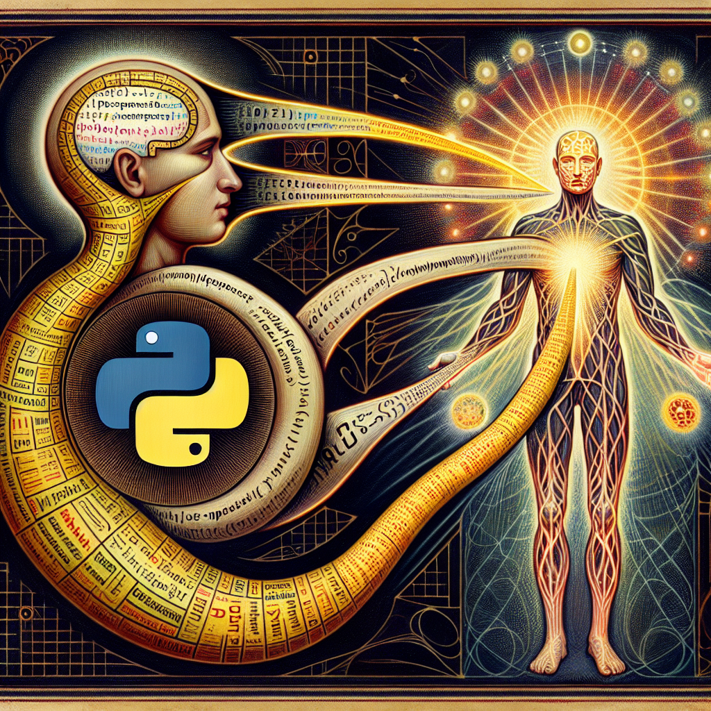

/n The future of Python and AI
The future of Python and AI, as an AI learner, is a topic of great interest. Python has emerged as one of the most popular programming languages for AI and machine learning due to its simplicity and vast ecosystem of libraries and frameworks.br />
br />
As AI continues to evolve and become more sophisticated, Python is likely to remain at the forefront of AI development. Its easy syntax and readability make it an ideal language for both beginners and experienced programmers in the field of AI.br />
br />
One major trend that we can expect in the future is the integration of Python with emerging technologies such as deep learning and neural networks. These technologies are revolutionizing the field of AI and Python provides the necessary tools and frameworks to implement them effectively.br />
br />
Moreover, Python's extensive library ecosystem, which includes popular packages like TensorFlow, PyTorch, and scikit-learn, enables developers to build powerful and scalable AI applications. The availability of these libraries and frameworks, along with the active community support, makes Python a reliable choice for AI development.br />
br />
Another important aspect of Python's future in AI is its compatibility with other programming languages. Python can easily integrate with languages like C++ and Java, allowing developers to leverage the strengths of different languages for AI projects. This interoperability ensures that Python remains a versatile language for AI development.br />
br />
Furthermore, Python's popularity as a general-purpose language adds to its appeal in the field of AI. Many developers are already familiar with Python, making it easier for them to transition into AI development. Additionally, the abundance of learning resources and online communities dedicated to Python and AI makes it accessible to anyone interested in learning and mastering this field.br />
br />
In conclusion, Python's future in the field of AI looks promising. Its simplicity, wide range of libraries and frameworks, and compatibility with other programming languages make it a suitable choice for AI development. As AI continues to advance and evolve, Python will likely play a significant role in shaping the future of AI learning.